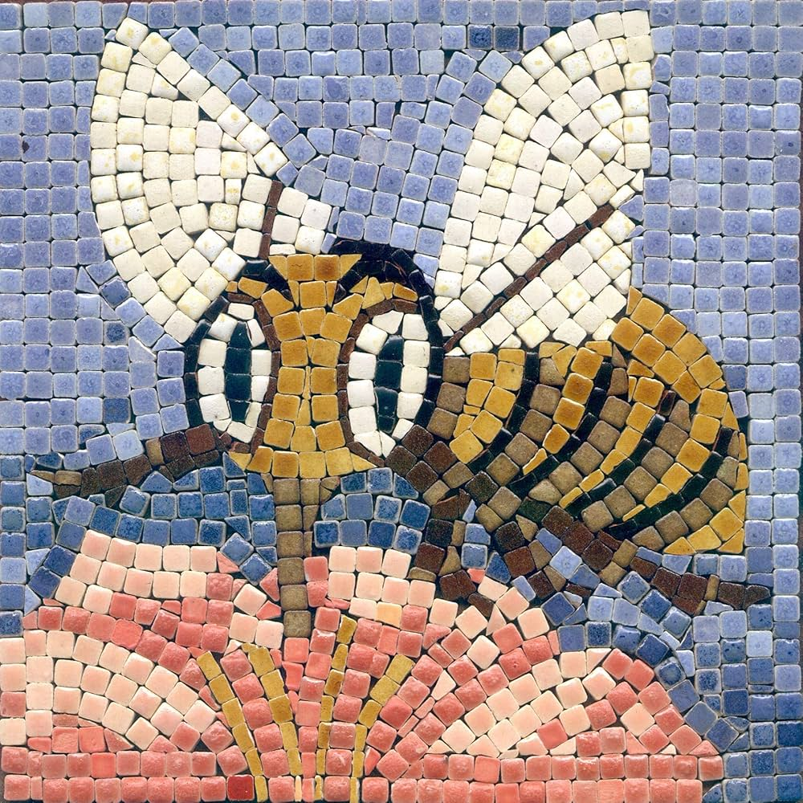

MOSAICS
Meaning of Mosaic
Mosaic is a type of art that involves arranging small pieces of materials such as glass, stones, paper, tiles, or shells to form a pattern or picture. The small pieces used in making mosaic are called tesserae.

These small materials are glued or fixed on a flat surface like a board, cardboard, wall, or floor to create beautiful and decorative designs.
Origin and Background
Mosaic art dates back thousands of years. The ancient Greeks and Romans used mosaics to decorate walls and floors in homes, temples, and public buildings. It was also common in Byzantine art and in African traditional designs, especially in Benin and Yoruba culture where beads were arranged in patterns.
Materials Used in Making Mosaic
Making a mosaic involves combining different small pieces to form a beautiful design. The material are tesserae, surface or base, glue or adhesives.

- Tesserae (Small pieces used to form the design):
- Colored paper – You can cut coloured paper into small squares or shapes to create patterns.
- Broken tiles – These are leftover pieces of ceramic or floor tiles. Be careful—they can be sharp.
- Beads – Small colourful beads can be arranged nicely to make beautiful mosaic art.
- Shells – Small snail shells or sea shells can be used to decorate your design.
- Stones – Clean, smooth stones or pebbles add a natural look.
- Colored glass – Bright pieces of glass make the design shine (only use with adult supervision).
- Buttons – Old buttons in different colours and sizes also work well.
- Surface or Base (Where you fix your design):
- Cardboard – Thick paper used for school projects. It’s easy to use for beginners.
- Wooden board – A flat piece of wood makes the mosaic stronger and long-lasting.
- Thick paper – Any strong paper that won’t tear easily can be used.
- Wall surface – Mosaics can even be made on walls in art rooms or homes.
- Glue or Adhesives (To hold the pieces in place):
- Gum – The regular gum you use for school work.
- PVA glue – A strong white glue used for art projects.
- Fevicol – A popular glue brand in Nigeria, strong and easy to use.
- Tools (To help in cutting and arranging):
- Scissors – For cutting paper or soft materials into small shapes.
- Cutter – A sharp tool for cutting hard materials like cardboard (handle carefully).
- Pencil – Used to draw your design before placing your pieces.
- Ruler – Helps in drawing straight lines or shapes.
- Brush – Used to spread glue evenly on the base.
Steps in Making a Mosaic
- Choose a design: It can be a simple pattern, shape, symbol, or object (e.g., flower, bird, sun).
- Draw the outline on the base material (e.g., cardboard).
- Cut small pieces (tesserae) from paper or collect suitable mosaic materials.
- Apply glue on a portion of the design.
- Arrange the pieces one by one on the glued part, following the outline and filling it carefully.
- Repeat the process until the whole design is covered.
- Allow to dry thoroughly.
Types of Mosaic (by Material)
- Paper mosaic – Uses colored paper or magazine cuttings.
- Tile mosaic – Uses pieces of tiles (often ceramic).
- Bead mosaic – Uses local or imported beads.
- Shell mosaic – Uses sea shells, snail shells.
- Glass mosaic – Uses cut pieces of colored glass.
- Seed mosaic – Uses seeds (e.g., maize, beans) to form designs.
Importance of Mosaic Art
- Enhances creativity and imagination.
- It Develops fine motor skills (cutting, arranging, gluing).
- It Beautifies the environment.
- It is Source of income – Handmade mosaic art can be sold.
- It Preserves culture and tradition.
- It Can be used to teach shapes, patterns, and colours.
Safety Tips While Making Mosaic
- Handle scissors and sharp tools with care.
- Do not use too much glue to avoid mess.
- Be cautious with glass or tile pieces – they can be sharp.
- Always clean up your working area after use.
Common Projects for Students
- Mosaic greeting card.
- Mosaic picture frame.
- Mosaic paper animal design.
- Mosaic wall art (small section).
- Mosaic tray or pot design (using paper or seeds).